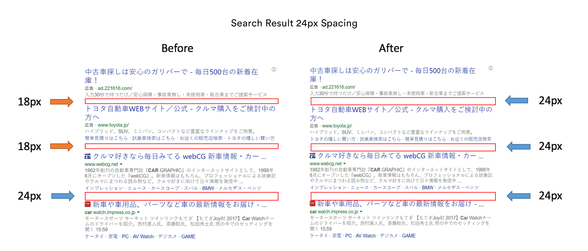
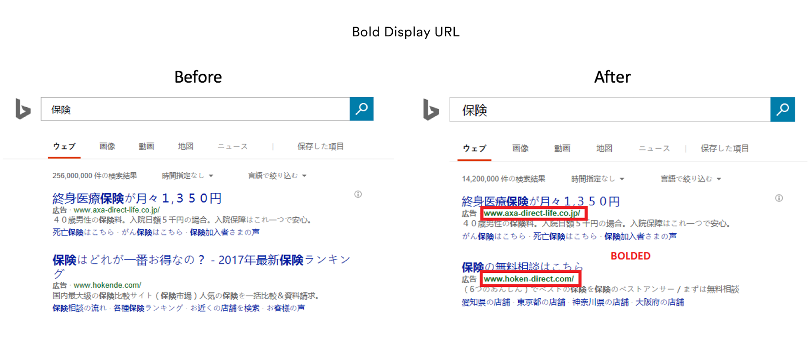

I worked with Microsoft Japan for the summer 2017 term in Tokyo. As a Software PM intern, I worked on three different projects pertaining to growth, implementing new features for Bing Japan, and trend analysis optimization. My work included:
Conducted A/B testing and analyzed data to identify and ship 8 UX/UI features for Bing Japan, which resulted in significant increases in KPIs.
Features resulted in a lift of over 9% in Revenue and Click Yield and 7% in Revenue Per Mille.
Conducted data analysis on search queries of Bing users in Japan to identify trends and areas to optimize, which led to the development of 3 new revenue growth projects.
Developed a year baseline projection for Revenue, Daily Search Queries, and Win10 Monthly Active Downloads that is currently in use at Microsoft Japan and Asia offices.
Determined trends on seasonality through query and data analysis using tools such as Rover and Cosmos. Created low-fidelity mockups and spec reports for the dev team to implement new features. (examples below)
 